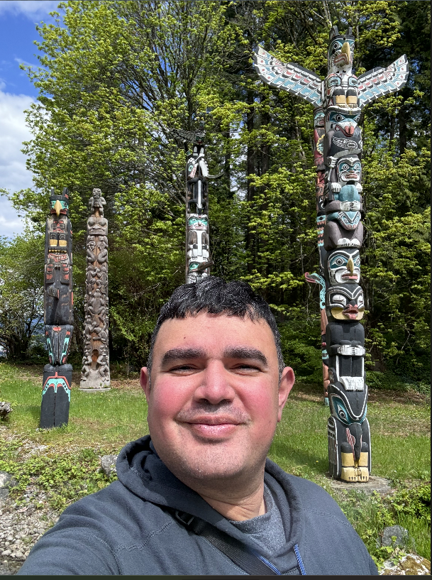

Luis Arroyo Resume

Summary
I am a results-oriented Engineering Manager with over four years of
technical experience in facilities management and operations, specializing
in enhancing operational efficiency and leading diverse teams. I possess
strong skills in electrical power systems, digital design, and
troubleshooting, supported by my expertise in tools such as AutoCAD and
MATLAB. With a proven track record in network planning and project
management at AT&T, I have successfully overseen large-scale projects,
ensuring compliance and customer satisfaction. My commitment to safety and
quality management, combined with strong interpersonal and analytical
skills, positions me as a valuable asset in engineering roles.
Additionally, I have a passion for web development, which complements my
technical skill set and allows me to explore innovative solutions.
Education
- Bachelor of Science (BS), Electrical Engineering
-
Certification Web Development Certification Front-End and Back-End
Service
-
Yellow Degree Belt Certification AT&T Six Sigma DMAIC Program, Online
Education
Work Experience
- Construction Project Manager at PAXIO for 1 year
- Senior Specialist-Tech Project Management at AT&T for 3 years
- Senior Specialist-Network Planning Engineer at AT&T for 3 years
- Senior Network Design Engineer ++ at AT&T for 3 years
- Flooring and Paing Associate at Home Depot for 6 years
- Clerk at U.S.G.S for 3 month
Skills
- HTML
- CSS
- JavaScript
- Python
- SQL
- Terminal
- AutoCAD
- MATLAB
- LT Splice
- Assembly
- Terminal
Awards
-
AT&T IPI Award: Individual Performance Incentive Award 2016, 2017, 2018,
2019, 2022
-
AT&T Award for Completion of TDP program: Technical Development Program
2014-2017
- AT&T Star Performance 2015, 2016, 2017, 2018, 2019, 2022
- SFSU 2013 COSE Student Project Showcase: Prize Winner